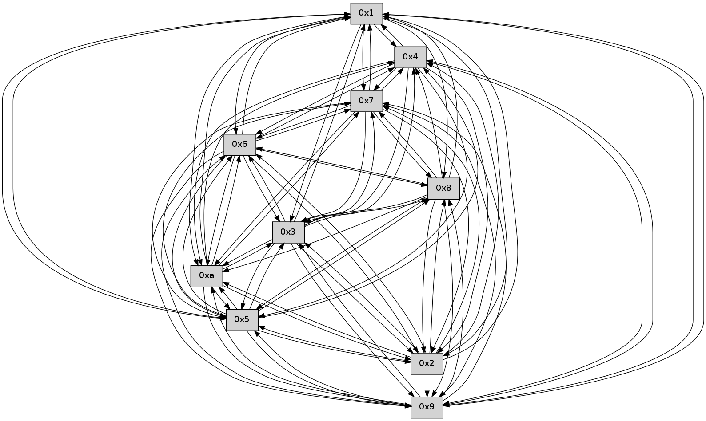

>> << IDX [start] -100 -25 -5 +0 +5 +25 +100 [435.476819038]
 Previous packets
430.009881 beacon06(faad) #0 coord=01,02,03,04,05,06,07,0a,09,08 cycle=688.0ms assoc 64 13 05
430.019883 beacon07(faad) #0 coord=01,02,03,04,05,06,07,0a,09,08 cycle=688.0ms assoc 64 69 48
430.029888 beacon0a(faad) #0 coord=01,02,03,04,05,06,07,0a,09,08 cycle=688.0ms assoc 64 18 43
430.039888 beacon09(faad) #0 coord=01,02,03,04,05,06,07,0a,09,08 cycle=688.0ms assoc 64 96 94
430.049887 beacon08(faad) #0 coord=01,02,03,04,05,06,07,0a,09,08 cycle=688.0ms assoc 64 ec d9
430.061362 [Hello(8): seq=221 sym=5,2,3,4,7,6,9,10,1 sysInfo= stat=5:11,0,0,0/2:0,0,0,0/3:13,0,0,0/4:0,0,0,0/7:3,0,0,0/6:10,0,0,0/9:7,0,0,0/10:0,0,0,0/1:3,0,0,0]
430.065327 [Hello(3): seq=278 sym=1,7,6,2,4,8,9,10,5 sysInfo= stat=1:2,0,0,0/7:7,0,0,0/6:3,0,0,0/2:4,0,0,0/4:8,0,0,0/8:5,0,0,0/9:15,0,0,0/10:6,0,0,0/5:3,0,0,0]
430.070912 [Hello(2): seq=275 sym=4,5,7,6,3,9,8,10,1 asym= sysInfo= stat=4:12,0,0,0/5:13,0,0,0/7:11,0,0,0/6:1,0,0,0/3:11,0,0,0/9:3,0,0,0/8:5,0,0,0/10:6,0,0,0/1:8,0,0,0]
430.073766 [Hello(10): seq=210 sym=6,3,2,5,9,8,7,4,1 sysInfo= stat=6:7,0,0,0/3:6,0,0,0/2:12,0,0,0/5:4,0,0,0/9:4,0,0,0/8:6,0,0,0/7:12,0,0,0/4:5,0,0,0/1:13,0,0,0]
430.077098 [Hello(4): seq=278 sym=5,7,6,2,3,9,8,10,1 sysInfo= stat=5:1,0,0,0/7:0,0,0,0/6:4,0,0,0/2:3,0,0,0/3:12,0,0,0/9:4,0,0,0/8:7,0,0,0/10:10,0,0,0/1:11,0,0,0]
430.080530 [Hello(5): seq=278 sym=7,6,4,3,1,9,8,10,2 sysInfo= stat=7:13,0,0,0/6:1,0,0,0/4:2,0,0,0/3:12,0,0,0/1:11,0,0,0/9:1,0,0,0/8:9,0,0,0/10:11,0,0,0/2:5,0,0,0]
430.083435 [Hello(9): seq=221 sym=5,2,3,4,7,6,8,10,1 sysInfo= stat=5:4,0,0,0/2:14,0,0,0/3:1,0,0,0/4:13,0,0,0/7:4,0,0,0/6:14,0,0,0/8:12,0,0,0/10:4,0,0,0/1:3,0,0,0]
----------------------------------------------------------------------
430.748031 beacon01(faad) #0 coord=01,02,03,04,05,06,07,0a,09,08 cycle=688.0ms assoc
-- color-indic=0 64 4d 11
430.758014 beacon02(faad) #0 coord=01,02,03,04,05,06,07,0a,09,08 cycle=688.0ms assoc 64 de 20
430.768015 beacon03(faad) #0 coord=01,02,03,04,05,06,07,0a,09,08 cycle=688.0ms assoc 64 a4 6d
430.778013 beacon04(faad) #0 coord=01,02,03,04,05,06,07,0a,09,08 cycle=688.0ms assoc 64 d3 87
430.788014 beacon05(faad) #0 coord=01,02,03,04,05,06,07,0a,09,08 cycle=688.0ms assoc 64 a9 ca
430.798014 beacon06(faad) #0 coord=01,02,03,04,05,06,07,0a,09,08 cycle=688.0ms assoc 64 27 1d
430.808015 beacon07(faad) #0 coord=01,02,03,04,05,06,07,0a,09,08 cycle=688.0ms assoc 64 5d 50
430.818019 beacon0a(faad) #0 coord=01,02,03,04,05,06,07,0a,09,08 cycle=688.0ms assoc 64 2c 5b
430.828019 beacon09(faad) #0 coord=01,02,03,04,05,06,07,0a,09,08 cycle=688.0ms assoc 64 a2 8c
430.838019 beacon08(faad) #0 coord=01,02,03,04,05,06,07,0a,09,08 cycle=688.0ms assoc 64 d8 c1
430.849490 [Hello(6): seq=278 sym=2,3,5,4,7,9,8,10,1 sysInfo= stat=2:0,0,0,0/3:3,0,0,0/5:13,0,0,0/4:4,0,0,0/7:10,0,0,0/9:10,0,0,0/8:15,0,0,0/10:11,0,0,0/1:2,0,0,0]
430.854781 [Hello(1): seq=187 sym=4,2,9,5,10,3,8,6,7 sysInfo= stat=4:3,0,0,0/2:9,0,0,0/9:11,0,0,0/5:7,0,0,0/10:6,0,0,0/3:12,0,0,0/8:9,0,0,0/6:5,0,0,0/7:9,0,0,0]
430.859813 [Hello(7): seq=278 sym=2,3,5,6,4,8,9,10,1 sysInfo= stat=2:1,0,0,0/3:14,0,0,0/5:3,0,0,0/6:3,0,0,0/4:12,0,0,0/8:5,0,0,0/9:6,0,0,0/10:11,0,0,0/1:6,0,0,0]
----------------------------------------------------------------------
431.536163 beacon01(faad) #0 coord=01,02,03,04,05,06,07,0a,09,08 cycle=688.0ms assoc
-- color-indic=0 64 f1 14
431.546146 beacon02(faad) #0 coord=01,02,03,04,05,06,07,0a,09,08 cycle=688.0ms assoc 64 62 25
431.556146 beacon03(faad) #0 coord=01,02,03,04,05,06,07,0a,09,08 cycle=688.0ms assoc 64 18 68
431.566145 beacon04(faad) #0 coord=01,02,03,04,05,06,07,0a,09,08 cycle=688.0ms assoc 64 6f 82
431.576146 beacon05(faad) #0 coord=01,02,03,04,05,06,07,0a,09,08 cycle=688.0ms assoc 64 15 cf
431.586146 beacon06(faad) #0 coord=01,02,03,04,05,06,07,0a,09,08 cycle=688.0ms assoc 64 9b 18
431.596146 beacon07(faad) #0 coord=01,02,03,04,05,06,07,0a,09,08 cycle=688.0ms assoc 64 e1 55
431.606152 beacon0a(faad) #0 coord=01,02,03,04,05,06,07,0a,09,08 cycle=688.0ms assoc 64 90 5e
431.616151 beacon09(faad) #0 coord=01,02,03,04,05,06,07,0a,09,08 cycle=688.0ms assoc 64 1e 89
431.626152 beacon08(faad) #0 coord=01,02,03,04,05,06,07,0a,09,08 cycle=688.0ms assoc 64 64 c4
431.637317 [Hello(2): seq=276 sym=4,5,7,6,3,9,8,10,1 sysInfo= stat=4:13,0,0,0/5:14,0,0,0/7:12,0,0,0/6:2,0,0,0/3:11,0,0,0/9:4,0,0,0/8:5,0,0,0/10:7,0,0,0/1:9,0,0,0]
431.640782 [Hello(5): seq=279 sym=7,6,4,3,1,9,8,10,2 sysInfo= stat=7:14,0,0,0/6:2,0,0,0/4:2,0,0,0/3:12,0,0,0/1:12,0,0,0/9:2,0,0,0/8:9,0,0,0/10:11,0,0,0/2:5,0,0,0]
431.643670 [Hello(8): seq=222 sym=5,2,3,4,7,6,9,10,1 sysInfo= stat=5:12,0,0,0/2:1,0,0,0/3:14,0,0,0/4:1,0,0,0/7:4,0,0,0/6:11,0,0,0/9:8,0,0,0/10:1,0,0,0/1:4,0,0,0]
431.646217 [Hello(3): seq=279 sym=1,7,6,2,4,8,9,10,5 sysInfo= stat=1:3,0,0,0/7:8,0,0,0/6:4,0,0,0/2:5,0,0,0/4:9,0,0,0/8:5,0,0,0/9:0,0,0,0/10:7,0,0,0/5:4,0,0,0]
431.648797 [Hello(10): seq=211 sym=6,3,2,5,9,8,7,4,1 sysInfo= stat=6:8,0,0,0/3:6,0,0,0/2:12,0,0,0/5:5,0,0,0/9:5,0,0,0/8:6,0,0,0/7:13,0,0,0/4:6,0,0,0/1:14,0,0,0]
431.652294 [Hello(9): seq=222 sym=5,2,3,4,7,6,8,10,1 sysInfo= stat=5:4,0,0,0/2:14,0,0,0/3:1,0,0,0/4:13,0,0,0/7:5,0,0,0/6:15,0,0,0/8:12,0,0,0/10:4,0,0,0/1:4,0,0,0]
431.658631 [Hello(4): seq=279 sym=5,7,6,2,3,9,8,10,1 sysInfo= stat=5:2,0,0,0/7:1,0,0,0/6:5,0,0,0/2:3,0,0,0/3:12,0,0,0/9:5,0,0,0/8:7,0,0,0/10:10,0,0,0/1:12,0,0,0]
----------------------------------------------------------------------
432.324293 beacon01(faad) #0 coord=01,02,03,04,05,06,07,0a,09,08 cycle=688.0ms assoc
-- color-indic=0 64 35 1a
432.334276 beacon02(faad) #0 coord=01,02,03,04,05,06,07,0a,09,08 cycle=688.0ms assoc 64 a6 2b
432.344276 beacon03(faad) #0 coord=01,02,03,04,05,06,07,0a,09,08 cycle=688.0ms assoc 64 dc 66
432.354276 beacon04(faad) #0 coord=01,02,03,04,05,06,07,0a,09,08 cycle=688.0ms assoc 64 ab 8c
432.364278 beacon05(faad) #0 coord=01,02,03,04,05,06,07,0a,09,08 cycle=688.0ms assoc 64 d1 c1
432.374276 beacon06(faad) #0 coord=01,02,03,04,05,06,07,0a,09,08 cycle=688.0ms assoc 64 5f 16
432.384276 beacon07(faad) #0 coord=01,02,03,04,05,06,07,0a,09,08 cycle=688.0ms assoc 64 25 5b
432.394282 beacon0a(faad) #0 coord=01,02,03,04,05,06,07,0a,09,08 cycle=688.0ms assoc 64 54 50
432.404282 beacon09(faad) #0 coord=01,02,03,04,05,06,07,0a,09,08 cycle=688.0ms assoc 64 da 87
432.414282 beacon08(faad) #0 coord=01,02,03,04,05,06,07,0a,09,08 cycle=688.0ms assoc 64 a0 ca
432.425164 [Hello(1): seq=188 sym=4,2,9,5,10,3,8,6,7 sysInfo= stat=4:4,0,0,0/2:10,0,0,0/9:12,0,0,0/5:8,0,0,0/10:7,0,0,0/3:13,0,0,0/8:10,0,0,0/6:5,0,0,0/7:10,0,0,0]
432.427662 [Hello(6): seq=279 sym=2,3,5,4,7,9,8,10,1 sysInfo= stat=2:1,0,0,0/3:4,0,0,0/5:14,0,0,0/4:5,0,0,0/7:11,0,0,0/9:11,0,0,0/8:0,0,0,0/10:12,0,0,0/1:3,0,0,0]
432.435948 [Hello(7): seq=279 sym=2,3,5,6,4,8,9,10,1 sysInfo= stat=2:2,0,0,0/3:15,0,0,0/5:4,0,0,0/6:3,0,0,0/4:13,0,0,0/8:6,0,0,0/9:7,0,0,0/10:12,0,0,0/1:6,0,0,0]
----------------------------------------------------------------------
433.112425 beacon01(faad) #0 coord=01,02,03,04,05,06,07,0a,09,08 cycle=688.0ms assoc
-- color-indic=0 64 89 1f
433.122409 beacon02(faad) #0 coord=01,02,03,04,05,06,07,0a,09,08 cycle=688.0ms assoc 64 1a 2e
433.132407 beacon03(faad) #0 coord=01,02,03,04,05,06,07,0a,09,08 cycle=688.0ms assoc 64 60 63
433.142407 beacon04(faad) #0 coord=01,02,03,04,05,06,07,0a,09,08 cycle=688.0ms assoc 64 17 89
433.152407 beacon05(faad) #0 coord=01,02,03,04,05,06,07,0a,09,08 cycle=688.0ms assoc 64 6d c4
433.162408 beacon06(faad) #0 coord=01,02,03,04,05,06,07,0a,09,08 cycle=688.0ms assoc 64 e3 13
433.172408 beacon07(faad) #0 coord=01,02,03,04,05,06,07,0a,09,08 cycle=688.0ms assoc 64 99 5e
433.182412 beacon0a(faad) #0 coord=01,02,03,04,05,06,07,0a,09,08 cycle=688.0ms assoc 64 e8 55
433.192412 beacon09(faad) #0 coord=01,02,03,04,05,06,07,0a,09,08 cycle=688.0ms assoc 64 66 82
433.202413 beacon08(faad) #0 coord=01,02,03,04,05,06,07,0a,09,08 cycle=688.0ms assoc 64 1c cf
433.218840 [Hello(2): seq=277 sym=4,5,7,6,3,9,8,10,1 sysInfo= stat=4:14,0,0,0/5:15,0,0,0/7:13,0,0,0/6:3,0,0,0/3:12,0,0,0/9:5,0,0,0/8:6,0,0,0/10:8,0,0,0/1:10,0,0,0]
433.223113 [Hello(4): seq=280 sym=5,7,6,2,3,9,8,10,1 sysInfo= stat=5:2,0,0,0/7:2,0,0,0/6:6,0,0,0/2:3,0,0,0/3:12,0,0,0/9:5,0,0,0/8:7,0,0,0/10:10,0,0,0/1:13,0,0,0]
433.225721 [Hello(10): seq=212 sym=6,3,2,5,9,8,7,4,1 sysInfo= stat=6:9,0,0,0/3:6,0,0,0/2:12,0,0,0/5:5,0,0,0/9:6,0,0,0/8:6,0,0,0/7:14,0,0,0/4:7,0,0,0/1:15,0,0,0]
433.229331 [Hello(9): seq=223 sym=5,2,3,4,7,6,8,10,1 sysInfo= stat=5:4,0,0,0/2:14,0,0,0/3:1,0,0,0/4:14,0,0,0/7:6,0,0,0/6:0,0,0,0/8:12,0,0,0/10:4,0,0,0/1:5,0,0,0]
----------------------------------------------------------------------
433.900555 beacon01(faad) #0 coord=01,02,03,04,05,06,07,0a,09,08 cycle=688.0ms assoc
-- color-indic=0 64 5d 2a
433.910538 beacon02(faad) #0 coord=01,02,03,04,05,06,07,0a,09,08 cycle=688.0ms assoc 64 ce 1b
433.920537 beacon03(faad) #0 coord=01,02,03,04,05,06,07,0a,09,08 cycle=688.0ms assoc 64 b4 56
433.930539 beacon04(faad) #0 coord=01,02,03,04,05,06,07,0a,09,08 cycle=688.0ms assoc 64 c3 bc
433.940538 beacon05(faad) #0 coord=01,02,03,04,05,06,07,0a,09,08 cycle=688.0ms assoc 64 b9 f1
433.950538 beacon06(faad) #0 coord=01,02,03,04,05,06,07,0a,09,08 cycle=688.0ms assoc 64 37 26
433.960540 beacon07(faad) #0 coord=01,02,03,04,05,06,07,0a,09,08 cycle=688.0ms assoc 64 4d 6b
433.970544 beacon0a(faad) #0 coord=01,02,03,04,05,06,07,0a,09,08 cycle=688.0ms assoc 64 3c 60
433.980545 beacon09(faad) #0 coord=01,02,03,04,05,06,07,0a,09,08 cycle=688.0ms assoc 64 b2 b7
433.990544 beacon08(faad) #0 coord=01,02,03,04,05,06,07,0a,09,08 cycle=688.0ms assoc 64 c8 fa
434.002044 [Hello(1): seq=189 sym=4,2,9,5,10,3,8,6,7 sysInfo= stat=4:5,0,0,0/2:11,0,0,0/9:13,0,0,0/5:8,0,0,0/10:8,0,0,0/3:14,0,0,0/8:10,0,0,0/6:6,0,0,0/7:11,0,0,0]
434.005039 [Hello(7): seq=280 sym=2,3,5,6,4,8,9,10,1 sysInfo= stat=2:3,0,0,0/3:0,0,0,0/5:4,0,0,0/6:3,0,0,0/4:14,0,0,0/8:6,0,0,0/9:8,0,0,0/10:13,0,0,0/1:6,0,0,0]
434.016049 [Hello(6): seq=280 sym=2,3,5,4,7,9,8,10,1 sysInfo= stat=2:2,0,0,0/3:5,0,0,0/5:14,0,0,0/4:6,0,0,0/7:12,0,0,0/9:12,0,0,0/8:0,0,0,0/10:13,0,0,0/1:3,0,0,0]
----------------------------------------------------------------------
434.688688 beacon01(faad) #0 coord=01,02,03,04,05,06,07,0a,09,08 cycle=688.0ms assoc
-- color-indic=0 64 e1 2f
434.698671 beacon02(faad) #0 coord=01,02,03,04,05,06,07,0a,09,08 cycle=688.0ms assoc 64 72 1e
434.708669 beacon03(faad) #0 coord=01,02,03,04,05,06,07,0a,09,08 cycle=688.0ms assoc 64 08 53
434.718671 beacon04(faad) #0 coord=01,02,03,04,05,06,07,0a,09,08 cycle=688.0ms assoc 64 7f b9
434.728671 beacon05(faad) #0 coord=01,02,03,04,05,06,07,0a,09,08 cycle=688.0ms assoc 64 05 f4
434.738671 beacon06(faad) #0 coord=01,02,03,04,05,06,07,0a,09,08 cycle=688.0ms assoc 64 8b 23
434.748672 beacon07(faad) #0 coord=01,02,03,04,05,06,07,0a,09,08 cycle=688.0ms assoc 64 f1 6e
434.758676 beacon0a(faad) #0 coord=01,02,03,04,05,06,07,0a,09,08 cycle=688.0ms assoc 64 80 65
434.768675 beacon09(faad) #0 coord=01,02,03,04,05,06,07,0a,09,08 cycle=688.0ms assoc 64 0e b2
434.778675 beacon08(faad) #0 coord=01,02,03,04,05,06,07,0a,09,08 cycle=688.0ms assoc 64 74 ff
434.789817 [Hello(9): seq=224 sym=5,3,4,7,6,8,10,1 sysInfo= stat=5:4,0,0,0/3:1,0,0,0/4:14,0,0,0/7:7,0,0,0/6:1,0,0,0/8:12,0,0,0/10:4,0,0,0/1:6,0,0,0]
434.792176 [Hello(5): seq=281 sym=7,6,4,3,1,9,8,10,2 sysInfo= stat=7:0,0,0,0/6:4,0,0,0/4:4,0,0,0/3:13,0,0,0/1:14,0,0,0/9:4,0,0,0/8:10,0,0,0/10:13,0,0,0/2:6,0,0,0]
434.796818 [Hello(2): seq=278 sym=4,5,7,6,3,9,8,10,1 sysInfo= stat=4:15,0,0,0/5:15,0,0,0/7:14,0,0,0/6:4,0,0,0/3:12,0,0,0/9:6,0,0,0/8:6,0,0,0/10:9,0,0,0/1:11,0,0,0]
434.800346 [Hello(10): seq=213 sym=6,3,2,5,9,7,4,1 sysInfo= stat=6:10,0,0,0/3:6,0,0,0/2:12,0,0,0/5:5,0,0,0/9:7,0,0,0/7:15,0,0,0/4:7,0,0,0/1:0,0,0,0]
434.803371 [Hello(4): seq=281 sym=5,7,6,2,3,9,10,1 sysInfo= stat=5:2,0,0,0/7:3,0,0,0/6:7,0,0,0/2:3,0,0,0/3:12,0,0,0/9:6,0,0,0/10:11,0,0,0/1:14,0,0,0]
434.805905 [Hello(3): seq=281 sym=1,7,6,2,4,8,9,10,5 sysInfo= stat=1:5,0,0,0/7:10,0,0,0/6:6,0,0,0/2:6,0,0,0/4:11,0,0,0/8:5,0,0,0/9:2,0,0,0/10:9,0,0,0/5:4,0,0,0]
434.815955 [Hello(8): seq=224 sym=5,2,3,4,7,6,9,10,1 sysInfo= stat=5:12,0,0,0/2:2,0,0,0/3:15,0,0,0/4:3,0,0,0/7:6,0,0,0/6:13,0,0,0/9:10,0,0,0/10:3,0,0,0/1:6,0,0,0]